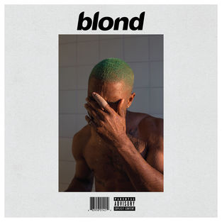
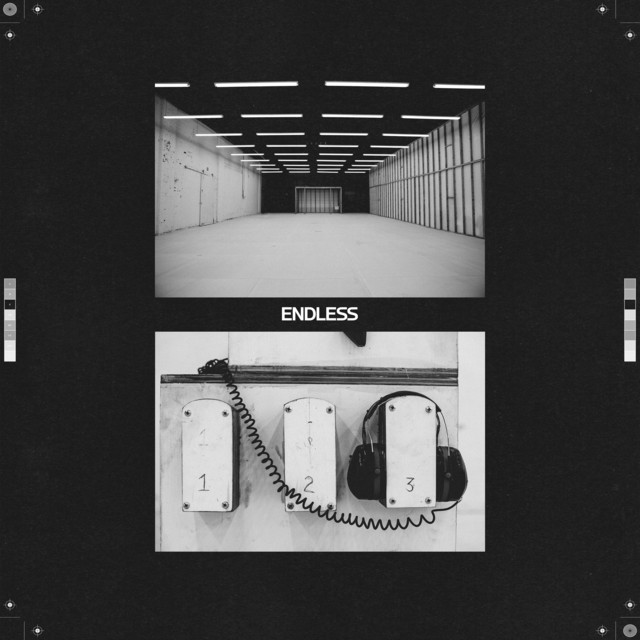

Álbum de estreia · 2012 · 17 faixas
channel ORANGE
Histórias cheias de detalhe sobre amor, família, consumo e solidão — costuradas por soul, R&B e mudanças de cenário.
Para começar: “Thinkin Bout You” · “Pyramids” · “Lost” Ouvir no SpotifyFrank Ocean · álbuns e projetos
Quatro projetos essenciais, quatro paisagens sonoras. Escolha uma capa para conhecer o disco e seguir para a plataforma de música.

Álbum de estúdio · 2016
Uma escuta íntima, feita de harmonias suaves, mudanças de textura e lembranças que parecem ganhar novas cores a cada retorno. É o álbum favorito dela — por isso ganha o lugar de destaque nesta coleção.
Da primeira mixtape às obras visuais
Álbum de estreia · 2012 · 17 faixas
Histórias cheias de detalhe sobre amor, família, consumo e solidão — costuradas por soul, R&B e mudanças de cenário.
Para começar: “Thinkin Bout You” · “Pyramids” · “Lost” Ouvir no Spotify
Álbum visual · 2016
Uma obra audiovisual experimental: som, imagem e o gesto repetido de construir uma escada em espiral se encontram num mesmo fluxo.
Para começar: “At Your Best (You Are Love)” · “Rushes” · “Higgs” Explorar no Apple Music
Mixtape independente · 2011
O primeiro grande retrato de Frank como artista solo: memórias, referências inesperadas e canções que abriram caminho para sua carreira.
Para começar: “Novacane” · “Swim Good” · “American Wedding” Conhecer a trajetória da mixtapeUma última faixa, outra primeira escuta
Volte para a página principal para descobrir a história de Frank, as músicas que marcaram sua carreira e a leitura especial de “Ivy” e “Pyramids”.
As datas e dados do catálogo vêm das páginas dos álbuns nas plataformas oficiais.